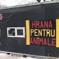

Modelul antreprenorial românesc se bazează pe o reţetă a succesului veche de când lumea: uitatul în curtea vecinului. Să zicem că acesta a plantat pepeni. Vremea e foarte secetoasă, lubeniţele iubesc soarele şi se rotunjesc frumuşel, piaţa e săracă în alte fructe, clienţii dau buzna la pepeni şi îl umplu pe vecin de parale.
Sâmburii şi mila Domnului
 Ionică, antreprenor în devenire, întrezăreşte oportunitatea îmbogăţirii printr-un tun specific românesc şi dă fuga la magazinul de specialitate de unde se aprovizionează din plin cu, evident, seminţe de pepeni. Apoi aşteaptă ca pe ghimpi sezonul de însămânţat, socotindu-şi deja profitul în numărul de antene parabolice pe care şi le-ar putea propti de pereţii coşmeliei lui din chirpici. Sigur, lui Ionică nu-i dă prin minte să mai facă şi alte investiţii precum paza pentru câmpul de bostani, dispozitive pentru alungat păsările, sisteme de irigaţii sau alte mărunţişuri. Sâmburii, succesul vecinului şi mila Domnului îi sunt de ajuns.
Ionică, antreprenor în devenire, întrezăreşte oportunitatea îmbogăţirii printr-un tun specific românesc şi dă fuga la magazinul de specialitate de unde se aprovizionează din plin cu, evident, seminţe de pepeni. Apoi aşteaptă ca pe ghimpi sezonul de însămânţat, socotindu-şi deja profitul în numărul de antene parabolice pe care şi le-ar putea propti de pereţii coşmeliei lui din chirpici. Sigur, lui Ionică nu-i dă prin minte să mai facă şi alte investiţii precum paza pentru câmpul de bostani, dispozitive pentru alungat păsările, sisteme de irigaţii sau alte mărunţişuri. Sâmburii, succesul vecinului şi mila Domnului îi sunt de ajuns.
Pentru că, din fericire, calamităţile naturale au bunul obicei de a nu se repeta de la un an la altul, vara următoare este mai degrabă ploioasă. Domnul pare a se milostivi de un alt vecin care s-a apucat să planteze cartofi. Oferta de barabule e cam mică, preţul cam mare, legumele prosperă, la fel şi vecinul. Ionică moare de ciudă lângă pepenii care se îneacă, tânjind după căldură. După ce că sunt mici şi pricăjiţi, mai trebuie să-i şi păzească de ciori, înaripate sau nu. Când la sfârşit de septembrie constată că nu şi-a scos nici banii daţi pe sâmburi, se jură că la anul va fi mai isteţ şi se va lua după vecinul care trebuie. Va planta cartofi!
 Numai că Ionică nu e singur pe lume. Antreprenori ca el sunt mulţi şi toţi par a fi tras cu ochiul în grădina aceluiaşi vecin. Aşa că piaţa se umple de barabule. Clienţii au de unde alege, devin mofturoşi, precupeţii ori scad preţul, ori aruncă la gunoi marfa stricată pe tarabe. Lui Ionică i s-a acrit de piureurile gătite din propria producţie excedentară şi se gândeşte să se lase de legumicultură. În doi ani de muncă n-a strâns bani nici cât pentru o sârmă de parabolică.
Numai că Ionică nu e singur pe lume. Antreprenori ca el sunt mulţi şi toţi par a fi tras cu ochiul în grădina aceluiaşi vecin. Aşa că piaţa se umple de barabule. Clienţii au de unde alege, devin mofturoşi, precupeţii ori scad preţul, ori aruncă la gunoi marfa stricată pe tarabe. Lui Ionică i s-a acrit de piureurile gătite din propria producţie excedentară şi se gândeşte să se lase de legumicultură. În doi ani de muncă n-a strâns bani nici cât pentru o sârmă de parabolică.
Uite un magazin care merge bine!
A auzit el că la Bucureşti umblă câini comunitari cu lapte’n ţâţă şi cornuri în coadă, aşa că ia calea Capitalei, convins că se va căpătui aşa cum au făcut-o atâţia alţi … vecini. Dă o raită prin cartierul în care tocmai s-a mutat cu chirie şi constată că există un magazin cu produse pentru animale de companie care merge al naibii de bine. Toată ziua mişună prin el bătrânele iubitoare de pisici şi tinerele iubitoare de hamsteri. Lui Ionică i se aprinde beculeţul antreprenorial sub cuşmă, face rost de o cămăruţă la parterul unui bloc de pe aceeaşi stradă şi se apucă de comercializat hrană şi accesorii pentru “happy pets”. Ideea pare infailibilă.
Dar, ca să vezi năzbâtie, profitul se încăpăţânează să ocolească portofelul afaceristului nostru. E drept că în cartier cererea de nisip pentru mâţe era mare, însă ea a rămas constantă, în vreme ce numărul de magazine s-a dublat. Bătrânelele sunt conservatoare, preferă să rămână la prăvălia pe care o cunosc, mai ales că “lui Miţulică Ghemuleţ îi place numai cărniţa la conservă luată de acolo”. Nicio băbuţă n-ar risca sănătatea şi confortul stomacal al lui Ghemu’ de dragul unui experiment comercial!
Mama lor de hoţi!
După doi ani de muncă asiduă la păzit tejgheaua şi evacuat conserve expirate, Ionică îşi azvârle cuşma după câinii comunitari, cu tot cu luminiţa antreprenorială, şi intră în insolvenţă. Trage oblonul magazinului, blestemă guvernul, dă vina pe criza mondială, înjură băncile, falimentul Greciei, măsurile de austeritate ale Spaniei şi fiţele monetare ale Angliei.
Deodată, inima îi vine la loc când vede peste drum un magazin de articole sportive. Tii, ce de muşterii are şi ce bine-i merge!


{kind=link}
partea bună este că există vecinul inițial cu pepenii și apoi celălalt cu cartofii. Din punctul ăsta de vedere personajul tău este în minoritate
De zeci de ani există cel cu pepenii, respectiv cel cu cartofii. Şi tot pepeni, respectiv cartofi cultivă. An de an.
E haios tipul descris:) Ba chiar si-a facut proverbe ca sa-si explice mai bine treaba: “da-i (romanului) mintea de pe urma”, “socoteala de acasa nu se potriveste cu cea din targ”. Iar Pacala, pare autentic si romanesc precum e Moise pentru evrei. Alt calibru, dar reprezentativ asemenea. Si politicianul desi “abil si parsiv” sufera de pacalisme, dar ca si Pacala, e multumit la sfarsit
Comments on this entry are closed.